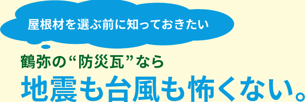
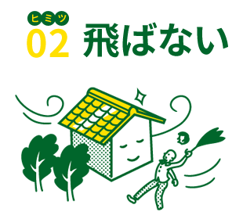

耐久性
防災性編
日本の屋根といえば「瓦」。でも最近は「地震に弱い」という誤解の声がちらほら…。
そんな今こそ、進化した瓦「防災瓦」がオススメです。
熊本地震の調査結果によると、以前の瓦の屋根にはたくさんのズレ・脱落が見つかりましたが、「防災瓦」の屋根にはほとんど被害が
見当たりませんでした。
では、防災瓦は一体何が違うのか…。そのヒミツ、お教えします！

以前の土葺き工法のように重い土を使わず、屋根重量を約半分程度に軽量化しました。

すべての瓦を釘やネジでしっかり固定。瓦同士も固定し、ズレや脱落を防止します。

屋根の棟部分を金具などでしっかり固定するガイドライン工法で崩壊を防ぎます。